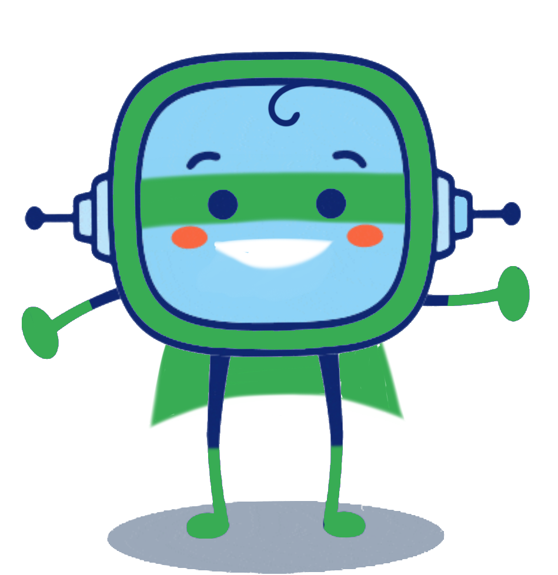
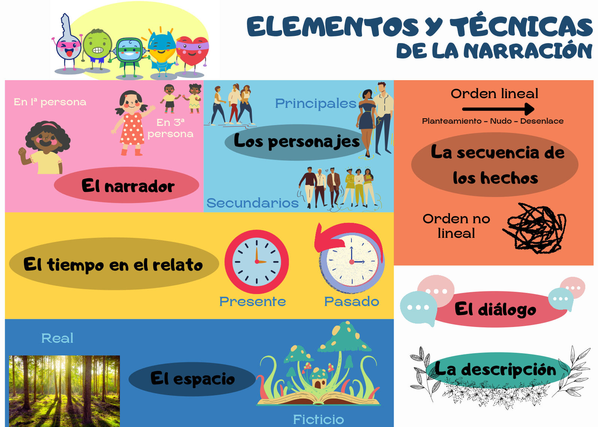

Hemos llegado al momento clave del reto que te lancé y que tú, con tu superpoder, estás llevando a cabo.
Has trabajado con los diferentes elementos y técnicas de la narración. También tienes tu guion donde has elegido tus personajes, el narrador, los espacios y tiempos de tu narración. Ahora vamos a compartido con tus compañeras y compañeros, llegó la hora de la verdad: ¡vas a elaborar tu primer relato!
Lectura facilitada
¡Llegamos al reto que te lancé!
Has trabajado con tu superpoder los elementos de la narración.
También tienes hecho tu guion con tus personajes, el narrador, los espacios y tiempos de tu relato.
Ahora te toca compartirlo con tus compañeras y compañeros.
